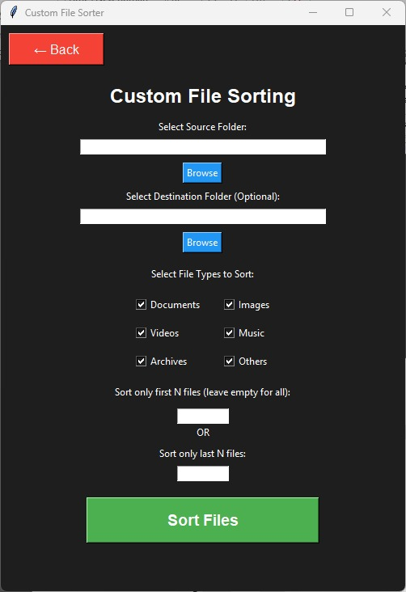

Screenshots
See Auto File Sorter in action


Auto File Sorter intelligently categorizes your documents, images, videos and more with just one click. Save hours of manual work!
Auto File Sorter comes packed with everything you need to keep your files organized automatically
Automatically detects and categorizes files by type, extension, and content. Supports 100+ file formats out of the box.
Create your own sorting rules and categories. Perfect for specialized workflows and unique file types.
Made a mistake? Easily undo any sorting operation with our powerful undo feature.
Optimized algorithms process thousands of files in seconds, not hours. Perfect for large collections.
Files are never modified or deleted without your permission. Complete control over your data.
Set it and forget it! Automatically sort new files on a schedule that works for you.
Getting started with Auto File Sorter is quick and easy
Download the installer for your operating system and follow the simple setup wizard. Takes less than a minute.
Choose which folders you want to organize. You can select multiple source folders and custom destinations.
Click the "Sort Now" button and watch as your files are automatically organized into the right categories.
That's it! Your files are now neatly organized. Set up scheduled sorting to keep everything tidy automatically.
See Auto File Sorter in action
Don't just take our word for it - hear from our satisfied users
Find answers to common questions about Auto File Sorter
Download Auto File Sorter today and say goodbye to messy folders forever. Available for Windows and macOS.